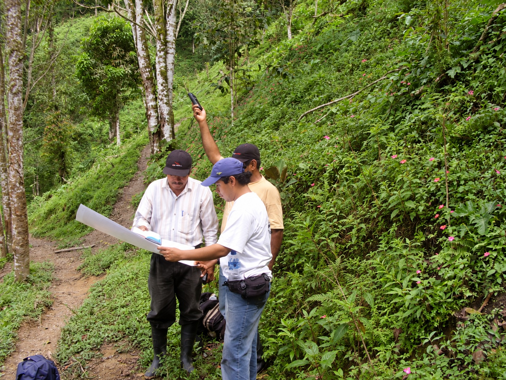
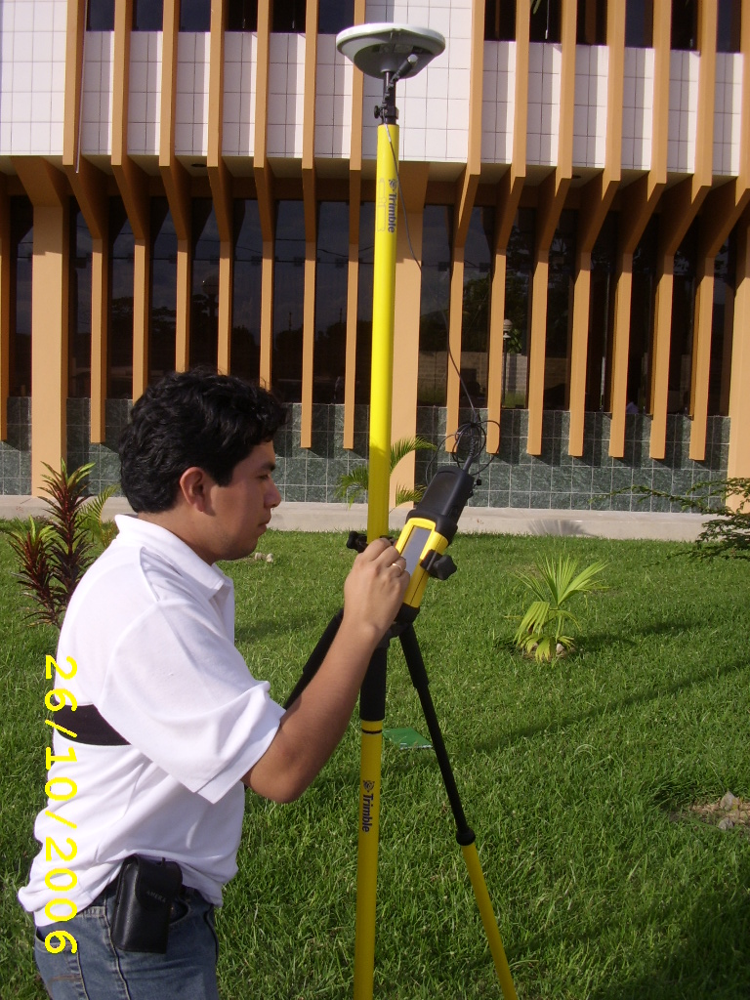
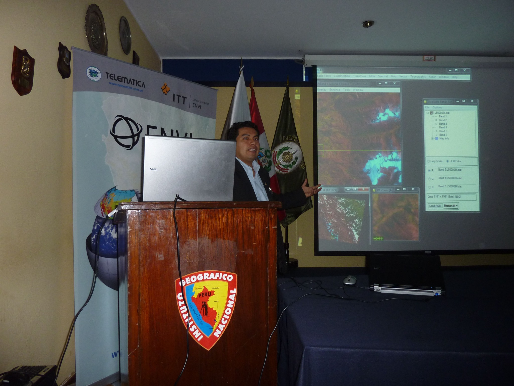
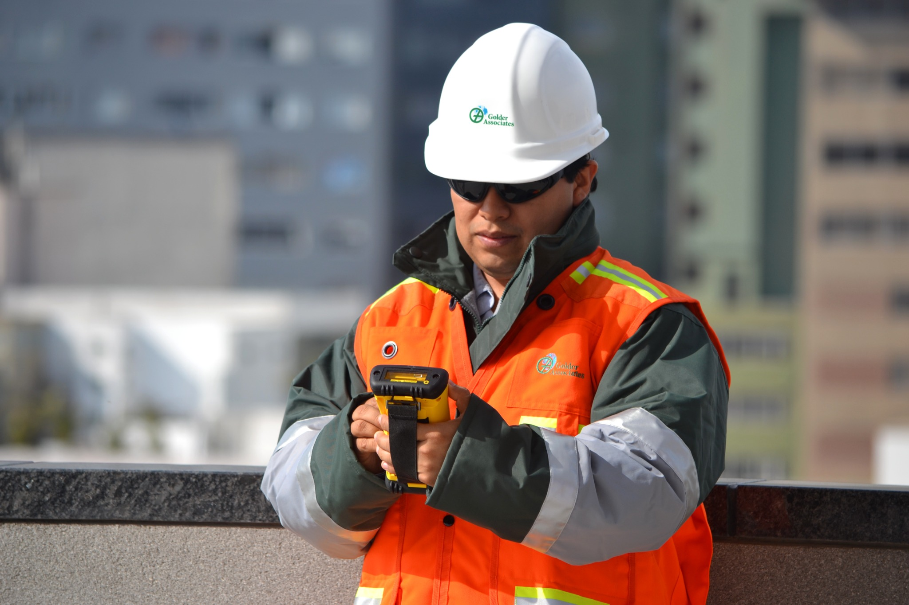
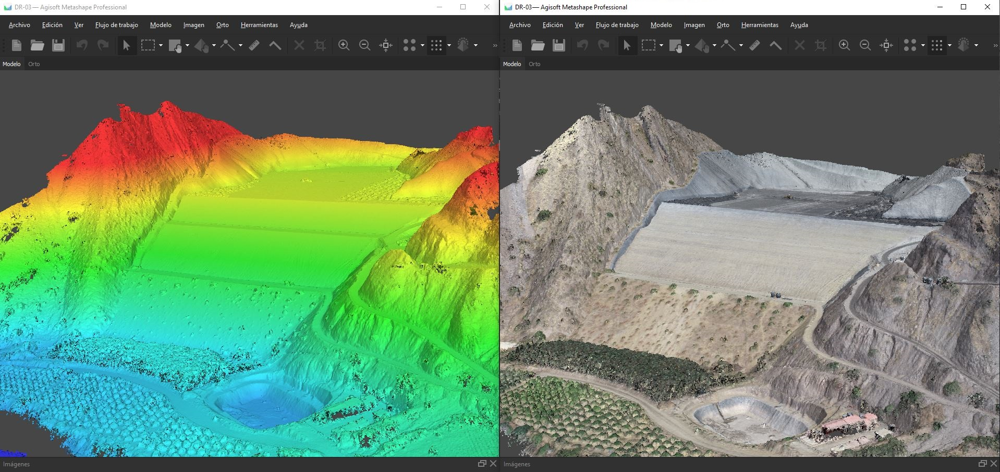
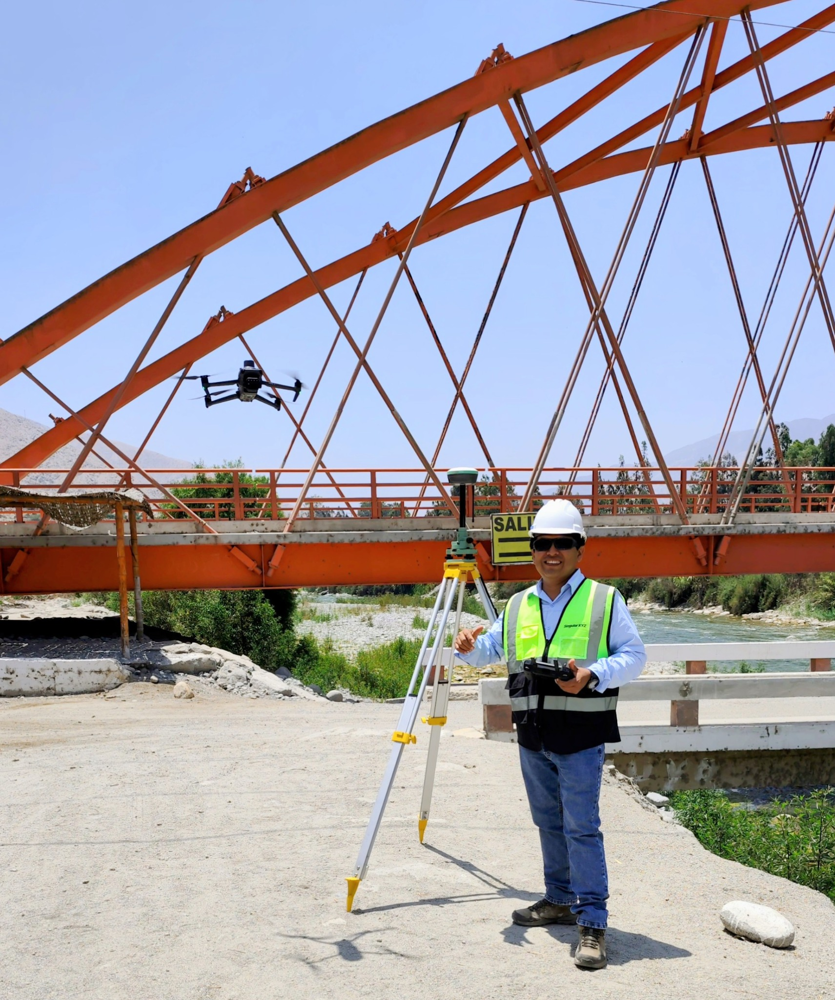
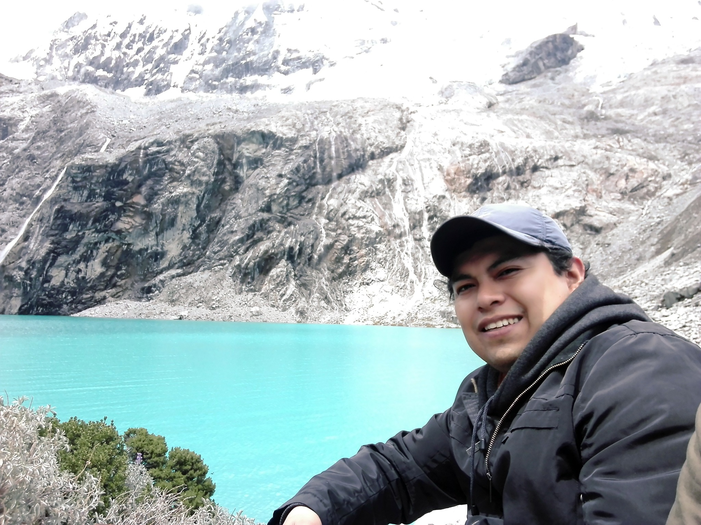

01 · CAMPO
Ingeniería aplicada
Experiencia en levantamientos, reconocimiento territorial, GNSS, topografía y actividades técnicas en ambientes urbanos, amazónicos y de alta montaña.
Ingeniero Geógrafo y MBA. Profesional y docente universitario dedicado a comprender, medir y representar el territorio mediante geodesia, GNSS, topografía, cartografía, fotogrametría, SIG y teledetección.
Mi trayectoria integra trabajo de campo, procesamiento geoespacial, consultoría, gestión y docencia. Desde los primeros levantamientos con GNSS y la interpretación cartográfica hasta la fotogrametría con drones y las geotecnologías actuales, mantengo una misma idea: la tecnología adquiere valor cuando permite comprender mejor el territorio y tomar mejores decisiones.
Experiencia en levantamientos, reconocimiento territorial, GNSS, topografía y actividades técnicas en ambientes urbanos, amazónicos y de alta montaña.
Experiencia en sistemas de información geográfica, cartografía, teledetección, procesamiento e interpretación de información espacial.
Docencia universitaria en topografía, fotogrametría, SIG, cartografía, geodesia satelital y geomática, conectando fundamentos con aplicaciones reales.
La evolución de las herramientas es también parte de la historia: cartografía impresa, receptores GNSS, teledetección, SIG, consultoría ambiental y, posteriormente, nuevas plataformas de captura y análisis geoespacial.
Trabajo de campo, lectura de mapas, reconocimiento del territorio y experiencias en diferentes regiones del Perú.
Uso de instrumentación GNSS y consolidación de una línea profesional vinculada al posicionamiento y la información geográfica.
Procesamiento geoespacial, análisis de imágenes y capacitación técnica con herramientas especializadas como ENVI.
Formación de nuevos profesionales y aplicación de GNSS, drones, fotogrametría y tecnologías geoespaciales a la ingeniería.
Una selección visual de experiencias que conectan territorio, tecnología, investigación aplicada, capacitación y práctica profesional.







“La geomática no consiste solamente en operar instrumentos. Consiste en comprender el territorio, interpretar la información y desarrollar criterio para resolver problemas reales.”
Tutor virtual de Cartografía
Asistente educativo diseñado para complementar el aprendizaje de Cartografía. Permite realizar consultas, reforzar conceptos y orientar el estudio de los contenidos desarrollados en el curso.
Acceder al tutor →